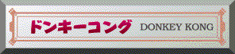
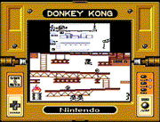
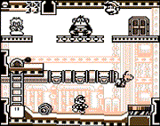
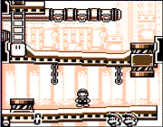

 ●むかしモード ドンキーコングにピーチ姫がさらわれた！正義感あふれるマリオは、ピーチ姫を取り戻すためひとり立ち上がるのだった。ドンキーコングのすさまじいタル攻撃をかわしまくれ！ ★上達へのコツ Bボタンで画面を切り換えながら、タルの動きを慎重に見て、あわてないでじっくり攻略しましょう。  ●いまモード むかしモードより多彩な仕掛けにマリオ大ピンチ！タイミングだけではなく、頭を使って仕掛けをクリアしていこう。上下2画面で1つのゲームが構成されています。 ★上達へのコツ ドカンに入るタイミングに気をつけよう。ドカンの中ではタルとあたらないので、タルが入るのと同時にドカンに入るとすれ違うことができます。たくさんのタルが転がってきた時は、一度ドカンの中に非難しよう！ |
    |